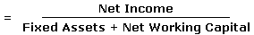

A measure of financial performance calculated as:
Fixed assets are tangible property used in production, such as real estate and machinery. Net working capital is calculated by taking the company's current assets minus its current liabilities. The higher the return, the better the profit performance for the company. Individually, no single calculation tells the whole story of a company's performance, and Return On Net Assets is just one of many ratios that can be used to evaluate a company's financial health.
If the purpose of performing the calculation is to generate a longer-term perspective of the company's ability to create value, extraordinary expenses may be added back into the net income figure. For example, if a company had a net income of $10 million but incurred an extraordinary expense of $1 million, the net income figure could be adjusted upward to $11 million. This adjustment would not accurately reflect the company's Return On Net Assets in that year, but might provide an indication of the Return On Net Assets the company could expect in the following year if it did not have to incur any further extraordinary expenses.
{kind=link}